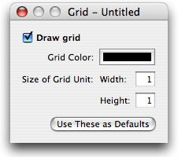

Pixels appear and disappear under my cursor without clicking
You may find that pixels appear and disappear under your cursor as you move it around, even if you don't click. This is actually a feature: a preview of what would be placed at that point if you clicked. For instance, if you were to set the tool's pattern, that would appear instead to let you know what you're placing. If you don't like it, it can be easily turned off.

To turn off tool preview:
Use the View > Hide Tool Preview menu item.